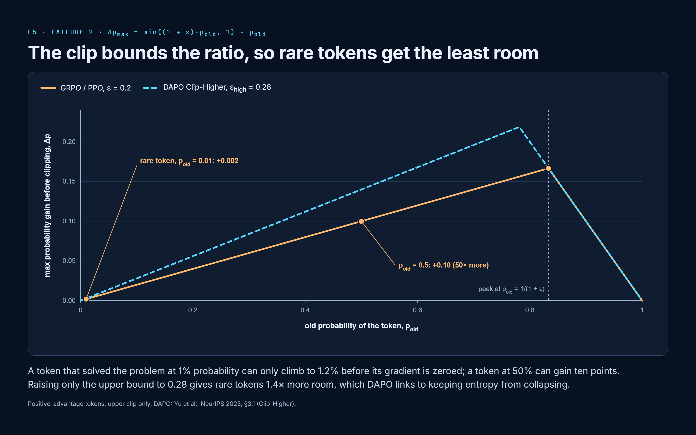
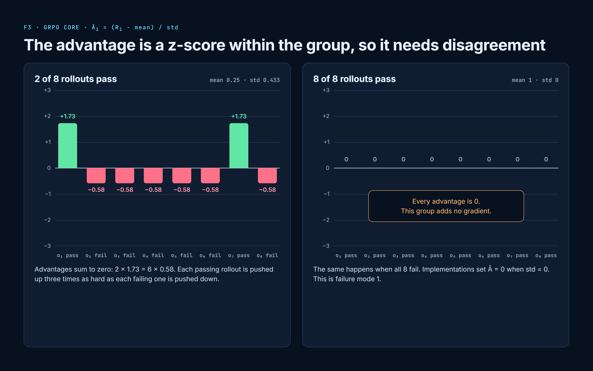
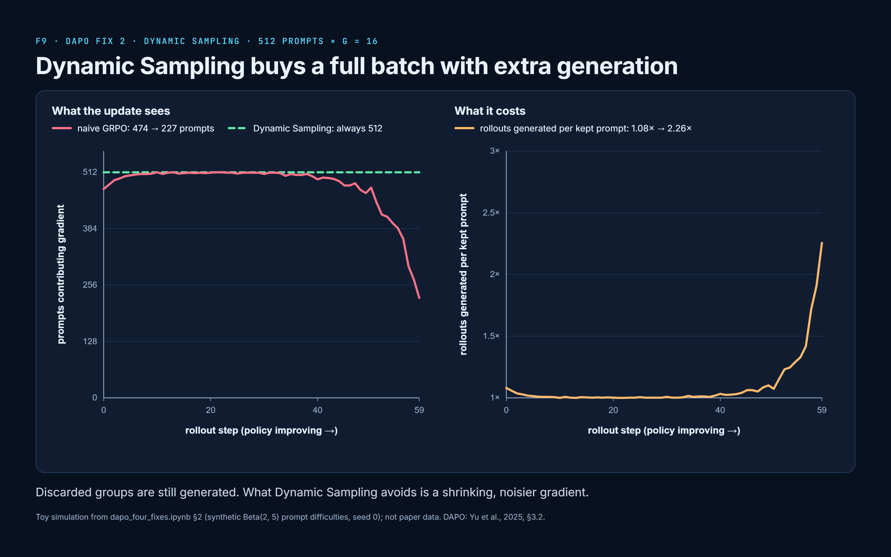
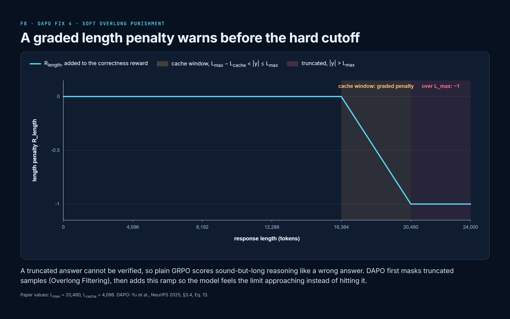
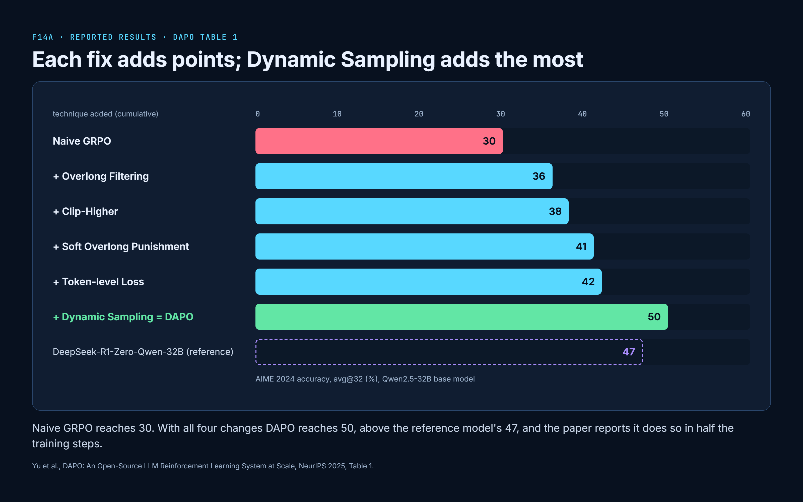

#N, to jump to slide NDAPO
Decoupled Clip and Dynamic sAmpling Policy Optimization: four changes to GRPO for long chain-of-thought (CoT) reinforcement learning, from DAPO: An Open-Source LLM Reinforcement Learning System at Scale.
The story in one sentence: training a naive GRPO baseline on long-CoT math, the DAPO authors observed four problems — entropy collapse, a shrinking number of prompts with non-zero advantage, under-weighted tokens in long responses, and reward noise from truncated responses — and changed one component of the recipe for each.
Acronyms in this deck. DAPO Decoupled Clip and Dynamic sAmpling Policy Optimization (Yu et al., 2025) · GRPO Group Relative Policy Optimization (Shao et al., 2024) · PPO Proximal Policy Optimization (Schulman et al., 2017) · CoT chain of thought · RL reinforcement learning · KL Kullback–Leibler divergence · AIME American Invitational Mathematics Examination (benchmark) · avg@32 accuracy averaged over 32 samples per problem. Full references: last slide.
Yu et al., ByteDance Seed & Tsinghua AIR · NeurIPS 2025 · arXiv:2503.14476 · assumes the GRPO deck
One training step of GRPO
Draw a question $q$ from the dataset. Freeze the current policy as $\pi_{\theta_{\text{old}}}$ and sample a group of $G$ responses:
Score each response with a rule (right or wrong), giving reward $R_i$. Take several gradient steps on $\theta$ using those same $G$ responses — which is exactly why the two policies drift apart and clipping starts to matter.
Notation (DAPO paper): $R_i$ is the reward of response $o_i$; $r_{i,t}=\pi_\theta(o_{i,t}\mid q,o_{i,<t})/\pi_{\theta_{\text{old}}}(o_{i,t}\mid q,o_{i,<t})$ is the importance ratio of its $t$-th token; $\hat A_{i,t}$ is the advantage. The DisCO deck writes the ratio as $x$ and the reward as $r$.
How can a reasonable objective fail?
Reading the terms: $\tfrac1G\sum_i$ averages over the $G$ responses; $\tfrac{1}{|o_i|}\sum_t$ averages over the tokens of response $o_i$; $r_{i,t}$ is the current/old probability ratio of token $t$; $\hat A_{i,t}$ is the group-normalized advantage (the same for every token of $o_i$); $\beta D_{\mathrm{KL}}$ penalizes drift from a frozen reference policy $\pi_{\text{ref}}$.
Details
1. Clipping limits rare tokens
The clip stops rewarding a token once its ratio exceeds $1+\varepsilon$, which for a rare token is a tiny absolute gain. The model keeps returning to the same high-probability tokens: entropy collapses and exploration stops.
Example: a useful token rising from 1% to 1.3% gains only 0.3 percentage points, but its ratio is 1.3 — already beyond a 1.2 clip.
2. Identical rewards give zero gradient
If every sampled answer is right — or every one is wrong — all advantages are 0. The group still cost generation time and a place in the batch, but contributes no gradient.
Example: 16 wrong answers give 16 equal rewards: plenty of compute, no gradient.
3. Tokens of long responses are under-weighted
Averaging within each response first gives every response the same total weight, so each token of a long derivation receives a smaller share — even when those extra steps made the answer correct.
Example: each token of a 200-token proof gets 10× less weight than each token of a 20-token guess.
4. Truncated responses are scored as wrong
A promising solution that hits the length limit cannot be verified, so it gets the same reward as faulty reasoning. The signal cannot distinguish "continue this path" from "avoid this path".
Example: a correct proof missing only its final line is penalized exactly like a fabricated answer.
Each of the next sections explains one failure and the DAPO change that targets it.
The five ideas this deck uses
| Idea | What it means in this deck |
|---|---|
| Importance ratio | $r_{i,t}=\pi_\theta(o_{i,t})/\pi_{\theta_{\text{old}}}(o_{i,t})$: how much more (or less) likely the current policy is to emit a token than the policy that generated the rollout. source ↗ |
| Clipping / trust region | $\min(xy,\,\mathrm{clip}(x,1{-}\varepsilon,1{+}\varepsilon)y)$ with ratio $x$ and advantage $y$, from PPO (Proximal Policy Optimization): once the ratio leaves $[1-\varepsilon,1+\varepsilon]$ in the direction the advantage favors, the term is flat and its gradient is zero. source ↗ |
| Mean & std normalization | The advantage $\hat A_i=\dfrac{R_i-\text{mean}(R)}{\text{std}(R)}$ is a plain z-score across the group's own rewards. If every $R_i$ is equal, std is 0 and $\hat A$ is undefined (implementations force it to 0). source ↗ |
| Bernoulli group probability | Model each response as an independent coin flip with accuracy $p$. Then $P(\text{all correct})=p^{G}$ and $P(\text{all wrong})=(1-p)^{G}$ — the building blocks for "how often is a group informative." source ↗ |
| Piecewise reward shaping | A function defined in pieces: flat at 0, then a straight ramp, then flat at −1. Ordinary in signal processing, and exactly the shape Fix 4 adds to the reward. source ↗ |
Clipping bounds the ratio, not the probability

Details
A geometry problem, and the model's opening move:
| Opening token | Old probability | Interpretation |
|---|---|---|
Let | 0.80 | Familiar algebraic approach |
Draw | 0.02 | Rare diagram-based approach |
A response starting with Draw solves the problem — positive advantage, and the update tries to raise its probability. But a ceiling of $1+\varepsilon$ on the ratio only ever permits an absolute increase of $p_{\text{old}}\varepsilon$:
The rare but successful move can gain at most 0.004 in probability before its clipped term stops contributing gradient.
DAPO §3.1 (Clip-Higher). The same headroom argument is plotted for all $p_{\text{old}}$ in the GRPO deck.
Widen the ceiling, widen the room to grow
Drag $\varepsilon_{\text{high}}$. GRPO keeps it at 0.2 on both sides; DAPO raises only the upper bound.
DAPO reports $\varepsilon_{\text{high}}=0.28$: $1.4\times$ GRPO's upper room. Push it to 0.5 to inspect a wider toy setting. Clip-Higher does not remove clipping or add an entropy bonus; it raises only the upper ratio bound.
Why not raise $\varepsilon_{\text{low}}$ too? A looser lower bound lets an update push low-probability tokens toward 0, which the paper reports collapses the sampling space; DAPO keeps $\varepsilon_{\text{low}}=0.2$.
A group with identical rewards contributes no gradient

Details
The advantage is a z-score across the group's own rewards. If every response in a group of $G=8$ gets the same reward, the standard deviation is zero and implementations set every advantage to zero:
The model generated 8 full chains of thought, and none of them contributes to the update.
A group has identical rewards exactly when the model has already mastered the prompt (or cannot solve it at all). As training accuracy rises, the share of all-correct prompts grows (DAPO Fig. 3b), so the number of prompts that actually contribute gradient keeps shrinking — the batch gradient gets smaller and noisier.
Roll a group of 8. Is it informative?
Set this prompt's per-response accuracy, then roll a fresh group of $G=8$ responses.
$P(\text{informative})=1-p^G-(1-p)^G$ for independent responses with accuracy $p$
The share of informative groups falls as the model improves

Details and the interactive chart
512 prompts, $G=16$, across a training run where the policy steadily gets better. Press play.
By the end of this toy run, naive GRPO's nominal batch is still 512 prompts, but only about 44% of them have non-zero advantages; keeping Dynamic Sampling's batch full of informative prompts requires 2.26× as many rollouts. (Toy simulation: prompt difficulties are synthetic, not taken from the paper.)
Over-sample, drop identical-reward groups, refill the batch
DAPO adds one constraint to the objective: every group kept for the update must contain at least one correct and at least one incorrect response.
- Sample a group of $G$ responses for each prompt in the batch, and score them.
- Drop every group whose accuracy is exactly 0 or exactly 1 (all its advantages are zero).
- Keep sampling groups for new prompts until the batch again holds the target number of informative prompts (512 in the paper).
- Update on that full batch with the DAPO objective; the per-batch sampling cost is therefore variable.
Details
Isn't discarding groups also a waste?
The discarded rollouts were still generated — and Dynamic Sampling generates more of them (2.26× in the toy on the previous slide). What it avoids is a different waste: naive GRPO keeps the zero-advantage groups in the batch, so each update averages over fewer informative prompts, and its gradient is smaller and noisier. Dynamic Sampling spends extra generation to keep the number of informative prompts per update constant.
Is the extra generation affordable? The paper argues that in a synchronous system the generation time is dominated by long-tail samples, so the strategy "does not necessarily impede training efficiency", and reports that training reaches the same accuracy in fewer steps (DAPO §3.2, Fig. 6).
When it gets expensive: if most prompts are almost always solved (or almost never), refilling a batch needs about $1/P(\text{informative})$ draws per kept prompt — filtering or re-curating the prompt set then matters more.
DAPO §3.2 (Dynamic Sampling) and Eq. 11. Hands-on: dapo_four_fixes.ipynb §2 and 03_exercises.ipynb Exercise 3.
Sample-level averaging gives every response the same total weight

Details
A group of 4 responses, lengths $[20, 40, 60, 300]$, all with the same advantage. GRPO averages per response first, so every response gets total weight $1/G$ regardless of length, and each of its tokens gets $1/(G\,|o_i|)$:
| Length | Per-token weight (sample-level) | Total share (sample-level) | Total share (token-level) |
|---|---|---|---|
| 20 | 0.01250 | 25.0% | 4.8% |
| 40 | 0.00625 | 25.0% | 9.5% |
| 60 | 0.00417 | 25.0% | 14.3% |
| 300 | 0.00083 | 25.0% | 71.4% |
Concrete example: Ask, "How many trailing zeros does $100!$ have?" Both responses earn the same correct reward.
20 tokens Short answer: "$24$."
300 tokens Worked answer: "A zero needs a factor of 10, so count factors of 5: $\lfloor100/5\rfloor+\lfloor100/25\rfloor=20+4=24$…"
GRPO gives each response the same 25% share, so every token in the worked solution gets 15× less weight than every token of the short answer. The next slide shows the fix.
Average over all tokens in the group, not per response
DAPO replaces the two nested averages with one average over every token in the group:
Here $\ell_{i,t}=\min\big(r_{i,t}\hat A_{i,t},\operatorname{clip}(r_{i,t},1-\varepsilon_{\text{low}},1+\varepsilon_{\text{high}})\hat A_{i,t}\big)$ is the clipped per-token term. Nothing else changes: same advantages, same ratios.
| Weight of one token of $o_i$ | Total weight of $o_i$ | |
|---|---|---|
| GRPO (sample-level) | $1/(G\,|o_i|)$ | $1/G$ |
| DAPO (token-level) | $1/\sum_j|o_j|$ — same for every token | $|o_i|/\sum_j|o_j|$ |
With equal lengths the two losses are identical; they differ only when lengths vary.
Details
Effect 1 · long, good reasoning is learned
Every token of a long correct derivation now carries the same weight as a token of a short answer, so reasoning patterns inside long responses contribute in proportion to their length.
Effect 2 · long, bad text is penalized
The paper observes that excessively long samples often contain gibberish and repetition. Under sample-level averaging these tokens are penalized weakly, which it links to an unhealthy rise in entropy and length; token-level averaging penalizes each of them fully (DAPO Fig. 4).
A related alternative
Dr. GRPO (Liu et al., 2025) divides by a constant, such as the maximum generation length, so that a token's weight does not depend on the other responses' lengths either.
DAPO §3.3 (Token-Level Policy Gradient Loss), Eq. 12. Hands-on: dapo_four_fixes.ipynb §3; 02_failure_lab.ipynb §3.
Make the worked solution longer. What happens to its signal?
Continue the $100!$ example. The short answer stays at 20 tokens; two other responses stay at 40 and 60. Drag the worked answer from 10 to 1000 tokens.
Running out of room is not the same as being wrong

Details
A response reasoning soundly toward the right answer gets cut off at the length limit. The rule-based verifier has no final answer to check, so the response receives the wrong-answer reward $R=-1$, however good the reasoning was. DAPO handles this in two steps: Overlong Filtering masks the loss of truncated samples, and Soft Overlong Punishment adds a length-aware term $R_{\text{length}}$ that ramps from 0 to $-1$ inside a cache window of $L_{\text{cache}}$ tokens before the limit $L_{\max}$:
| Response | Length | Finished? | Rrule | Rlength | Total R |
|---|---|---|---|---|---|
| A | 50 | yes, correct | +1 | 0 | +1.0 |
| B | 92 | yes, correct (rambled) | +1 | −0.6 | +0.4 |
| C | 100 | no, hit the budget | −1 | −1 | −2.0 |
Response B is fully correct and still loses 0.6 for rambling into the cache window. Response C stacks two separate −1 penalties — one for being unverifiable, one for hitting the ceiling.
DAPO §3.4 (Overlong Reward Shaping), Eq. 13. The paper uses $L_{\max}=20{,}480$ with $L_{\text{cache}}=4{,}096$; the table uses the toy scale $L_{\max}=100$, $L_{\text{cache}}=20$.
Slide the length. Watch the penalty ramp in.
Toy scale: $L_{\max}=100$, $L_{\text{cache}}=20$, so the soft window is $(80,100]$.
The cache window penalizes length drift before truncation
Naive GRPO's average response length drifts upward over training. Press play and watch where the batch actually sits.
Each fix, stacked, on AIME 2024

Details
AIME 2024 accuracy (avg@32, %) when the techniques are added one at a time to a Qwen2.5-32B base model (DAPO Table 1). The last bar is the paper's reference model.
Overlong Filtering first masks truncated samples; Soft Overlong Punishment then supplies a graded signal inside the cache window.
Naive GRPO reaches 30. All four fixes together reach 50 — past the reference model's 47 — in half the training steps.
Can you explain DAPO?
Question 1: Why does GRPO's symmetric clip hurt exploration specifically?
Question 2: What exactly does Dynamic Sampling discard?
Question 3: Does Overlong Reward Shaping ever penalize a fully correct response?
Four independent knobs, one shared diagnosis
Each DAPO technique targets a different part of the GRPO training recipe: you can study Clip-Higher separately from Dynamic Sampling, or Token-Level Loss separately from Overlong Reward Shaping. Together, the paper reports that they stabilize long-CoT RL and reach 50 points on AIME 2024 with a Qwen2.5-32B base model.
Details
| Technique | GRPO component it changes | Change |
|---|---|---|
| Clip-Higher | ratio clipping | asymmetric bounds: $\varepsilon_{\text{low}}=0.2$, $\varepsilon_{\text{high}}=0.28$ |
| Dynamic Sampling | which groups enter the batch | over-sample; keep only groups with $0<\#\text{correct}<G$ |
| Token-level loss | loss aggregation | one average over all tokens in the group |
| Overlong reward shaping | reward | mask truncated samples; graded length penalty in the cache window |
DAPO also drops the KL penalty: the paper argues that a long-CoT model is expected to move far from its initial policy.
Next → run dapo_four_fixes.ipynb (about 45 min), then continue with the DisCO deck.
Paper · Code · Companion notebook · GRPO deck · DisCO deck
Sources cited in this deck
- Q. Yu et al. DAPO: An open-source LLM reinforcement learning system at scale. NeurIPS, 2025. (DAPO; all equation, figure and table numbers in this deck)
- Z. Shao et al. DeepSeekMath: Pushing the limits of mathematical reasoning in open language models. arXiv:2402.03300, 2024. (GRPO)
- DeepSeek-AI. DeepSeek-R1: Incentivizing reasoning capability in LLMs via reinforcement learning. arXiv:2501.12948, 2025. (reference model in the results slide)
- J. Schulman et al. Proximal policy optimization algorithms. arXiv:1707.06347, 2017. (PPO, clipped objective)
- Z. Liu et al. Understanding R1-Zero-like training: A critical perspective. arXiv:2503.20783, 2025. (Dr. GRPO)
- G. Li et al. DisCO: Reinforcing large reasoning models with discriminative constrained optimization. NeurIPS, 2025.